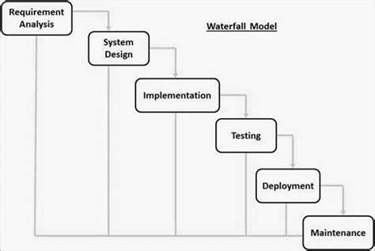

Los procesos de desarrollo de software son fundamentales para la creación exitosa de aplicaciones y programas informáticos. Estos procesos incluyen la planificación, diseño, codificación, pruebas y mantenimiento del software. Cada etapa del ciclo de vida del desarrollo de software (SDLC) tiene un objetivo específico y es crucial para la entrega de soluciones tecnológicas efectivas y de calidad.
El SDLC (Software Development Life Cycle) es un proceso sistemático y estructurado que guía la creación, implementación y mantenimiento de un sistema de software, desde su concepción inicial hasta su retiro definitivo. Este ciclo permite desarrollar productos de software de alta calidad, cumpliendo con los requisitos del cliente, los plazos establecidos y los recursos disponibles. El SDLC se compone de varias fases interrelacionadas, que pueden repetirse en forma iterativa dependiendo del modelo de desarrollo que se utilice (como cascada, ágil, espiral, etc.). Las principales etapas del SDLC son:
Reputación de marca: esto no tiene precio, por supuesto. Es más probable que una marca obtenga reconocimiento internacional cuando una organización supera los parámetros de calidad establecidos.
Retención de clientes: satisfacer o superar constantemente las necesidades y expectativas de los clientes fomenta su fidelidad. Cuando se cumplen o superan las normas más exigentes, ¿por qué iban a ir los clientes a otro sitio?
Sostenibilidad empresarial: ofrecer excelencia de forma constante garantiza y mantiene un flujo constante de clientes. Hacer negocios de forma sostenible y producir el mínimo de residuos es la mejor manera de hacer crecer una organización y prepararla para el futuro.
Conformidad: cumplir las normas reglamentarias, de seguridad y de calidad es imprescindible, y un SGC facilita este proceso sin problemas.
Ventaja competitiva: los productos y servicios de mayor calidad ofrecen a las empresas una ventaja competitiva en tiempos complejos.
Compromiso del personal: los empleados que se sienten implicados en la mejora de la calidad tienden a experimentar un mayor compromiso y productividad.
El modelo de cascada es un método de gestión de proyectos que se caracteriza por ser lineal y secuencial. Este modelo divide el proyecto en distintas fases que deben completarse antes de pasar a la siguiente, incluyendo etapas como Análisis, Diseño, Implementación, Pruebas y Mantenimiento. Fue propuesto originalmente por el Dr. Winston W. Royce en 1970 para el desarrollo de software y se utiliza ampliamente en la gestión de proyectos. Aunque es un enfoque estructurado, ha recibido críticas por ser considerado obsoleto en algunos contextos modernos.

Reputación de marca: esto no tiene precio, por supuesto. Es más probable que una marca obtenga reconocimiento internacional cuando una organización supera los parámetros de calidad establecidos.
Retención de clientes: satisfacer o superar constantemente las necesidades y expectativas de los clientes fomenta su fidelidad. Cuando se cumplen o superan las normas más exigentes, ¿por qué iban a ir los clientes a otro sitio?
El modelo en V es una metodología de gestión de proyectos que se utiliza en el desarrollo de software y en la gestión de tecnologías de la información y comunicación (TIC). Este modelo se caracteriza por su estructura en forma de V, que representa un proceso de desarrollo que incluye fases de análisis de requisitos, diseño, implementación y verificación. El modelo en V se utiliza para garantizar la calidad del software y se basa en la verificación y validación a lo largo de todo el ciclo de vida del desarrollo.
Reputación de marca: esto no tiene precio, por supuesto. Es más probable que una marca obtenga reconocimiento internacional cuando una organización supera los parámetros de calidad establecidos.
Retención de clientes: satisfacer o superar constantemente las necesidades y expectativas de los clientes fomenta su fidelidad. Cuando se cumplen o superan las normas más exigentes, ¿por qué iban a ir los clientes a otro sitio?
El modelo interactivo permite desarrollar software en ciclos cortos y manejables, entregando versiones incrementales que son validadas por el cliente. Esta retroalimentación continua asegura que el producto se ajuste mejor a las necesidades reales, minimizando errores y adaptándose a cambios. Aunque requiere una planificación cuidadosa y control sobre el alcance, es ideal para proyectos donde los requisitos pueden evolucionar o no están completamente definidos desde el principio.
Reputación de marca: esto no tiene precio, por supuesto. Es más probable que una marca obtenga reconocimiento internacional cuando una organización supera los parámetros de calidad establecidos.
Retención de clientes: satisfacer o superar constantemente las necesidades y expectativas de los clientes fomenta su fidelidad. Cuando se cumplen o superan las normas más exigentes, ¿por qué iban a ir los clientes a otro sitio?
El modelo incremental permite desarrollar software de manera gradual, entregando valor desde etapas tempranas, ajustándose al feedback del cliente y permitiendo mayor adaptabilidad. Es especialmente útil en proyectos donde los requisitos pueden cambiar o donde es importante lanzar funcionalidades clave lo antes posible. Sin embargo, requiere una buena planificación, integración estructural y un equipo competente para manejar la complejidad.
Reputación de marca: esto no tiene precio, por supuesto. Es más probable que una marca obtenga reconocimiento internacional cuando una organización supera los parámetros de calidad establecidos.
Retención de clientes: satisfacer o superar constantemente las necesidades y expectativas de los clientes fomenta su fidelidad. Cuando se cumplen o superan las normas más exigentes, ¿por qué iban a ir los clientes a otro sitio?